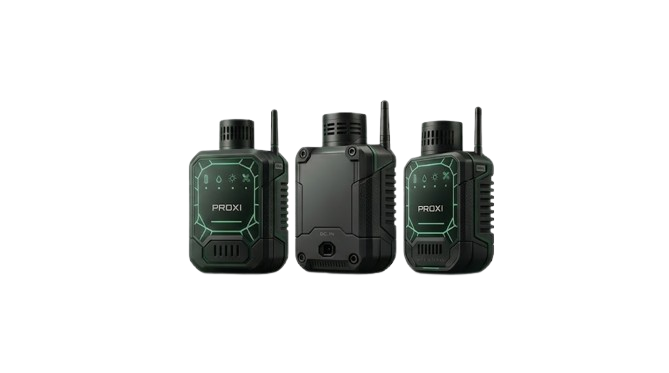

Sentinel-2 & Copernicus
Imagens multiespectrais capturadas a 786 km de altitude pelo satélite Sentinel-2B. O sensor MSI registra 13 bandas espectrais e revisita qualquer região do Brasil a cada 5 dias.
Transformamos imagens de satélite em informações acessíveis para produtores, gestores públicos e organizações que precisam tomar decisões com confiança.
Produtores, seguradoras e gestores públicos têm acesso a imagens de satélite diariamente, mas transformar esses dados em decisões práticas ainda exige especialistas, softwares complexos e muito tempo de processamento.
O resultado é um cenário onde informações críticas chegam tarde demais, aumentando riscos operacionais, perdas financeiras e ineficiência na gestão territorial.
Enquanto o Sentinel-2 monitora grandes áreas da superfície terrestre, o Proxi realiza a coleta local de temperatura, luminosidade e umidade do solo. Juntos, eles criam uma camada de dupla validação capaz de transformar imagens orbitais em evidências confiáveis para tomadas de decisão.
Captura dados orbitais e índices espectrais como NDVI, NDWI e NBR em escala territorial.

Realiza a validação local dos dados coletados pelo satélite utilizando sensores instalados em campo.
Converte dados complexos em informações acessíveis para agricultores, gestores públicos e pesquisadores.
Democratizar o acesso a dados orbitais.
Auxiliar decisões ambientais e agrícolas.
Validar informações espaciais com sensores locais.
Gerar laudos territoriais acessíveis em português.
Do satélite ao campo. Uma infraestrutura completa que coleta, interpreta e valida informações territoriais em tempo quase real.
Imagens multiespectrais capturadas a 786 km de altitude pelo satélite Sentinel-2B. O sensor MSI registra 13 bandas espectrais e revisita qualquer região do Brasil a cada 5 dias.
Processamento automático de NDVI, NDWI e NBR utilizando Python, NumPy e Rasterio para identificar vegetação, disponibilidade hídrica e áreas queimadas.
Geocodificação automática, consulta à API Copernicus, cruzamento com dados do IBGE e geração de laudos territoriais completos em PDF.
Sensor físico desenvolvido para comparar medições reais de solo, luminosidade e temperatura com os dados observados pelos satélites.
Enquanto o Sentinel observa o território do espaço, o Proxi coleta medições físicas diretamente no local, validando os dados orbitais e aumentando a confiabilidade dos laudos gerados pelo Specto.

Monitore índices espectrais, clima e alertas em tempo real. Interface projetada para decisões rápidas e precisas.
Quer ver como esses dados se transformam em um laudo completo para o seu negócio?